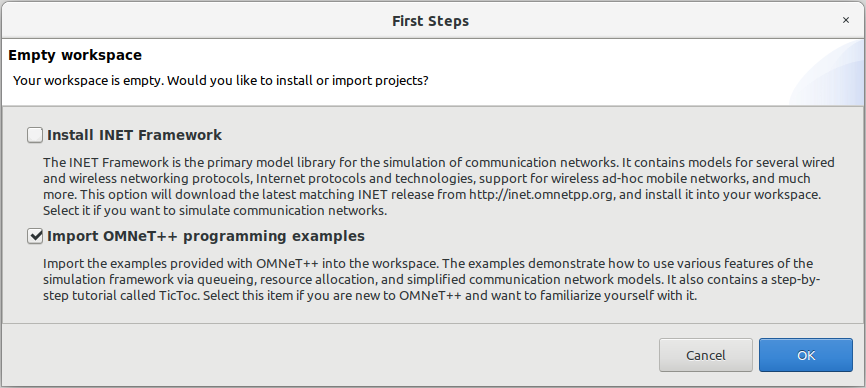
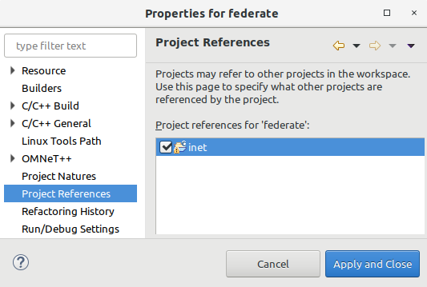
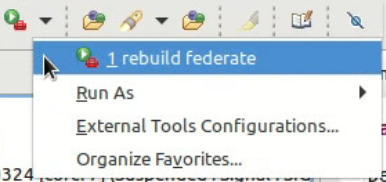

This section provides a description how to set up the OMNeT++ IDE for the Eclipse MOSAIC OMNeT++ Federate Development.
If you wish to use another IDE than OMNeT++ IDE (based on Eclipse), you can use
ns-3 Federate Development Setup
as inspiration - it describes the setup of Visual Studio Code.
At this point it is awaited, that the
OMNeT++ Federate is successfully installed.
Prepare OMNeT++ IDE
Create an empty directory somewhere inside your home directory. We will call it <omnetpp_workspace> from here on. This directory will be used as a workspace in your OMNeT++ IDE.
Open your OMNeT++ IDE by executing omnetpp in your terminal.
Select <omnetpp_workspace> as workspace and continue by clicking Launch.
Close the “Welcome” screen.
Since your workspace is empty, the OMNeT++ IDE will ask you if you want to install the INET framework and OMNeT++ programming examples.

OMNeT++ IDE: prevent automatic installation of INET
Uncheck INET and decide for yourself if you want to install the examples.
By clicking OK the examples are going to be installed into your <omnetpp_workspace>
If you already have INET installed somewhere you can skip the download and import your existing INET project:
Cancel the dialog.
Choose File > Open Projects from File System...
In the new window choose the directory of your existing INET installation as Import Source and click Finish
The INET framework is supported in version 4.1.1. To ensure the correct version is installed, install it manually:
Unpack it into the working directory of OMNeT++ IDE (Eclipse)
Rename the unpacked directory inet4 to inet
Insert the directory inet as project to OMNeT++ IDE (as described above)
Build INET
The project inet should now be visible in the Project Explorer of your OMNeT++ IDE.
Right-click on free space in the Project Explorer and choose New > OMNeT++ Project...
OMNeT++ IDE: Create new OMNeT++ Project
In the new window:
Name the new project federate
Uncheck the box before Use default location, click Browse and select: <mosaic>/bin/fed/omnetpp/omnetpp_federate_src/src
OMNeT++ IDE: Create new OMNeT++ Project
Click Next
On the following Initial Contents page select Empty Project and continue by clicking Finish
You should now find two projects in the Project Explorer of your OMNeT++ IDE: inet and federate
Right-click on the federate project and choose Properties
Go to Project references and check the box before inet

Choose project references
That’s it! None of the files should now be marked with an error symbol.
Configure Rebuild Configuration
Since the Eclipse MOSAIC OMNeT++ Federate is not a classic OMNeT++ project, it cannot be build regulary with
the OMNeT++ IDE by just clicking on the Build button. However, to make the build process easy and intuitive
we provide a simple build script and the following desciption how to configure the OMNeT++ IDE to enable
building on a single click:
In the OMNeT++ IDE select Run > External Tools > External Tools Configuration...
Double-click in the left column on Program to create a new configuration.
Call it rebuild federate
In the Main tab:
Under Location choose Browse Workspace... and select federate/rebuild_federate.sh
Still in the Main tab under Working Directory choose Browse Workspace... and select federate
OMNeT++ IDE Build Configuration
In the Build tab uncheck the box before Build before launch
OMNeT++ IDE Build Configuration
Now you can Apply your changes and click on Run.
Since you have built the project at least once, you can rebuild it again by clicking here:

Run rebuild
The following video shows the above described steps:
Configure Debug Configuration
To debug the Eclipse MOSAIC OMNeT++ Federate during simulation you need to create a Debug Configuration. The following
instruction will tell you how to do that:
In your OMNeT++ IDE choose Run > Debug Configurations...
In the new window double-click on OMNeT++ Simulation in the left column and name the new created debug configuration federate.
In the Executable row check other and type /federate/federate
In the Working dir row type /federate
In the Ini file(s) row type debug.ini omnetpp.ini
At the end of the page click on the More >> link. And make sure all fields in the Advanced area are empty.
For Projects to build select Do not build automatically before launch
Now Apply your changes and try your configuration by clicking Debug
The following images shows the final debug configuration:


{kind=link}
{kind=link}


{kind=link}
{kind=link}